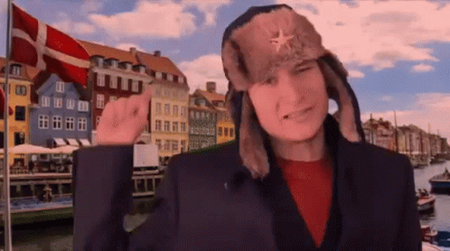
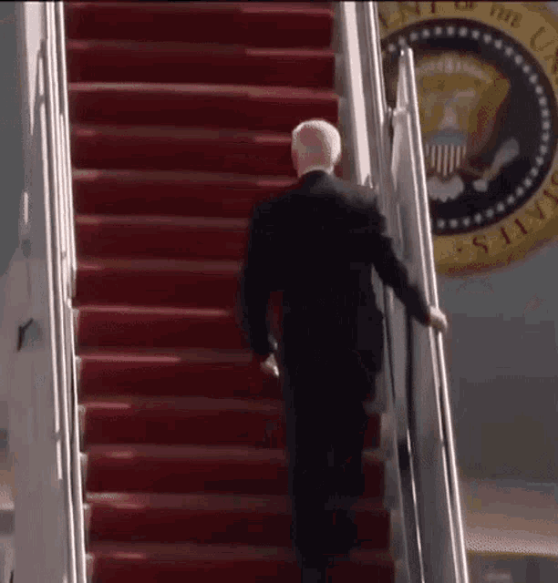
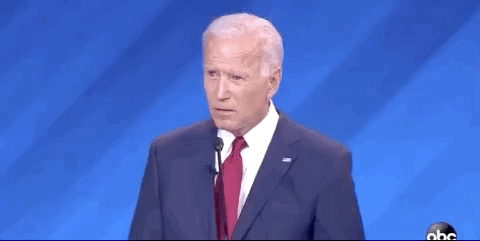
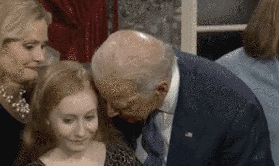

RationalWiki is gay!



Tankies are based!
Normal people are not:
Normal people are not:
YOU
1. Liberals
2. Feminists
3. Homosexual
4. Transgenger
5. Pedophiles
6. Neo-Cons
7. Neo-Libs
8. White
Guiltists
9. Wiki Admins
Yes, YOU
This website has never recognized Joseph Biden
as the legitimate president of the United States.
  